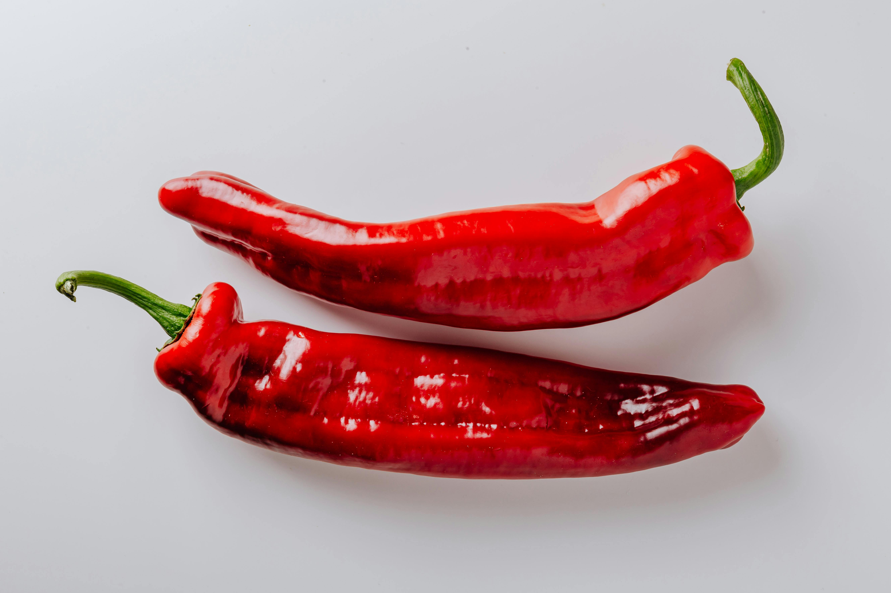

Les Piments : Un Feu de Saveurs

Les piments, ces petits fruits aux mille et une saveurs, ajoutent du piquant à nos plats et à notre santé. Découvrons ensemble leur univers enflammé !
Types de Piments Populaires
Jalapeño
Habanero
Piment d'Espelette
Bienfaits des piments
- Boost métabolique : La capsaïcine, responsable du piquant, peut accélérer le métabolisme.
- Riche en vitamine C : Excellents pour renforcer le système immunitaire.
- Propriétés anti-inflammatoires : Peuvent aider à réduire l'inflammation dans le corps.
- Amélioration de la digestion : Stimulent la production de sucs gastriques.
Comment Choisir et Conserver des Piments
Choisir des piments frais :
Recherchez des piments avec une peau lisse et brillante. Ils doivent être fermes au toucher et sans taches ou rides.
Conservation :
Conservez les piments frais au réfrigérateur dans un sac en plastique perforé pendant une à deux semaines. Pour une conservation plus longue, vous pouvez les congeler ou les sécher.
Recette Rapide : Sauce Piquante Maison
- Mixez 5 piments de votre choix (sans les graines pour moins de piquant).
- Ajoutez 2 gousses d'ail, 1/4 d'oignon, le jus d'un citron vert.
- Salez, poivrez, et ajoutez un filet d'huile d'olive.
- Mixez le tout jusqu'à obtenir une consistance lisse.
Attention !
La consommation de piments très forts peut causer des irritations. Commencez doucement et augmentez progressivement votre tolérance.